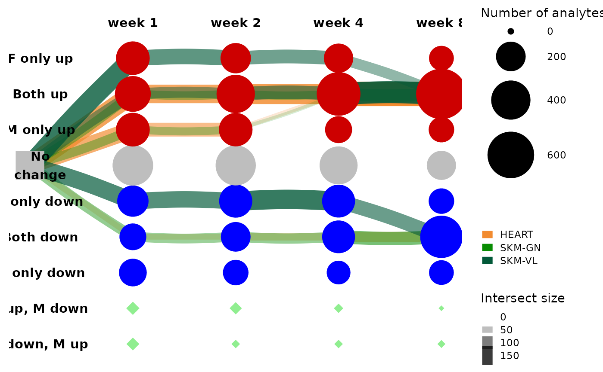

Graph representation of feature trajectories
Source:R/bayesian_graphical_clustering.R
get_tree_plot_for_tissue.RdThe main function for obtaining a graphical (tree) representation of the differential analysis results.
Usage
get_tree_plot_for_tissue(
tissues,
omes = NULL,
node_sets = MotrpacRatTraining6moData::GRAPH_COMPONENTS$node_sets,
edge_sets = MotrpacRatTraining6moData::GRAPH_COMPONENTS$edge_sets,
min_size = 20,
parallel_edges_by_ome = FALSE,
parallel_edges_by_tissue = FALSE,
edge_width_range = c(0, 10),
edge_alpha_range = c(0, 1),
color_nodes_by_states = TRUE,
max_trajectories = NULL,
highlight_subset = NULL,
curvature = 0.1
)Arguments
- tissues
A character vector where values are in MotrpacRatTraining6moData::TISSUE_ABBREV. The set of tissues to take for the analysis. If NULL take all.
- omes
A character vector where values are in MotrpacRatTraining6moData::ASSAY_ABBREV. The set of omes to take for the analysis. If NULL take all.
- node_sets
A named list with the node (state) sets of analytes/features, see details for analyte name convention.
GRAPH_COMPONENTS$node_setsby default.- edge_sets
A named list with the edge (state) sets of analytes/features, see details for analyte name convention.
GRAPH_COMPONENTS$edge_setsby default.- min_size
A numeric. The threshold on the set sizes to be considered.
- parallel_edges_by_ome
A logical. TRUE means that we want to added parallel edges for the different omes.
- parallel_edges_by_tissue
A logical. TRUE means that we want to added parallel edges for the different tissues.
- edge_width_range
A numeric vector of size 2, a parameter for ggraph
- edge_alpha_range
A numeric vector of size 2, a parameter for ggraph
- color_nodes_by_states
A logical. If TRUE, nodes are colored by states. Red for up-reg, blue for down-reg, green for a discrepancy between the sexes.
- max_trajectories
A numeric or NULL. If not NULL then it specifies the number of pathways to keep when looking into the edge sets after filtering by omes and tissues. If parallel_edges_by_tissue = TRUE then take the top trajectories in each tissue.
- highlight_subset
A character string or NULL. If not NULL then it specifies the name of a node, edge, or path to highlight in the tree.
- curvature
A number between 0 and 1, where larger values yield more curved edges.
Details
The function filters the input set to include analytes from the given tissues and omes (if tissues/omes are not null).
If parallel edges are requested then the relevant edge sizes are computed internally and are used within ggraph for the output plot.
Analyte names are in the ASSAY_ABBREV;TISSUE_ABBREV;[feature_ID] format.
Node set names are are in the [{1,2,4,8}]w_F[{-1,0,1}]_M[{-1,0,1}] format for example: 1w_F-1_M0.
Edge set names are in the [node_a]---[node_b] format, e.g., 4w_F0_M0---8w_F0_M1.
See also
bayesian_graphical_clustering() for more details about the graphical analysis.
Examples
if (FALSE) { # \dontrun{
### Example 1: redo the analysis using the rat data differential analysis results (z-scores)
data(REPFDR_INPUTS, package="MotrpacRatTraining6moData")
zscores = REPFDR_INPUTS$zs_smoothed
rat_data_clustering_sol = bayesian_graphical_clustering(zscores)
# extract the largest trajectories
get_trajectory_sizes_from_edge_sets(rat_data_clustering_sol$edge_sets,min_size = 50)
# plot the top trajectories of the muscle tissues, color edges by tissue
get_tree_plot_for_tissue(tissues = c("SKM-GN","HEART","SKM-VL"),
omes = "TRNSCRPT",
node_sets = rat_data_clustering_sol$node_sets,
edge_sets = rat_data_clustering_sol$edge_sets,
min_size = 20,
parallel_edges_by_tissue = TRUE,
max_trajectories = 3)
} # }
### Example 2: load the graphical solutions from MotrpacRatTraining6moData
### and plot without rerunning the algorithm
get_tree_plot_for_tissue(
tissues=c("SKM-GN","HEART","SKM-VL"),
omes="TRNSCRPT",
min_size = 20,
parallel_edges_by_tissue = TRUE,
max_trajectories = 3
)
#> Using "sugiyama" as default layout
#> Warning: Ignoring `graph` as layout is already calculated
#> ℹ Pass the calculated layout to the `graph` argument to silence this warning
